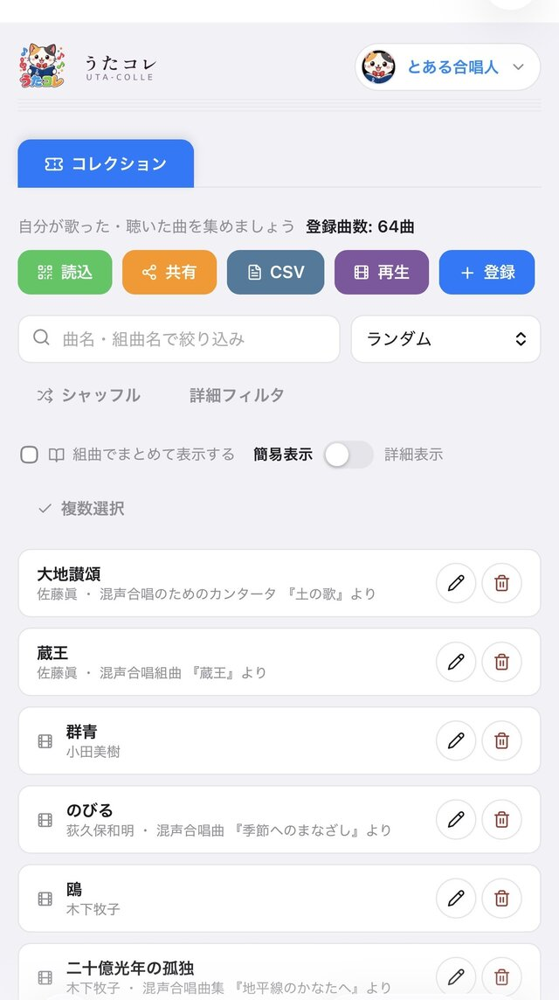
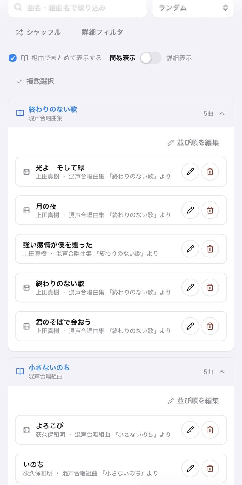
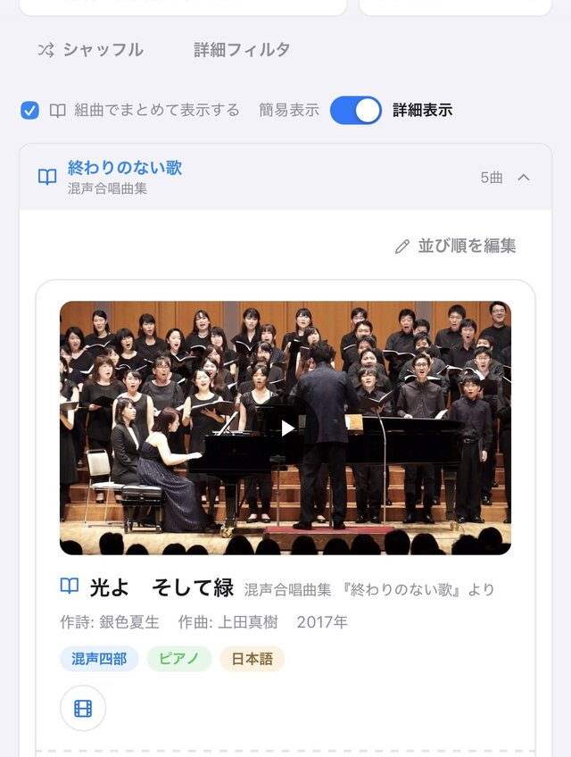
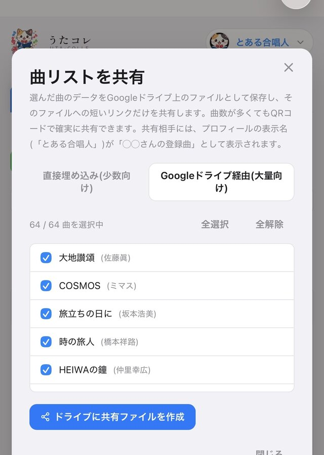
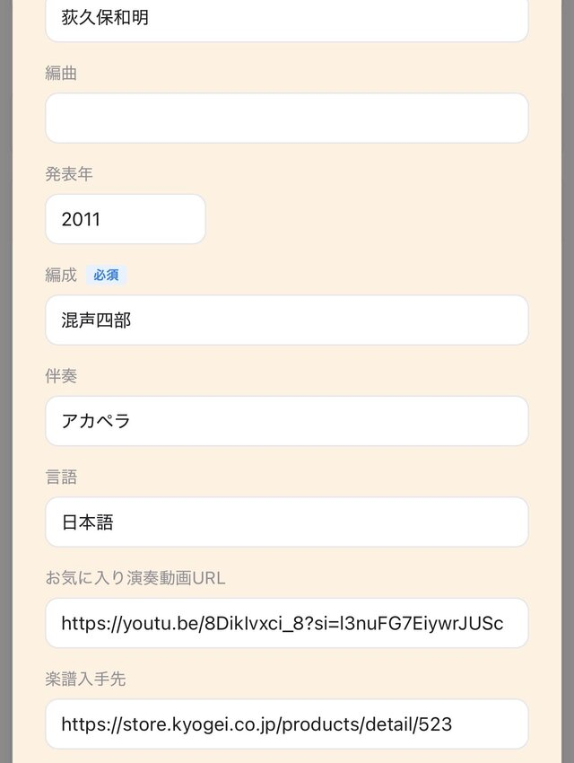
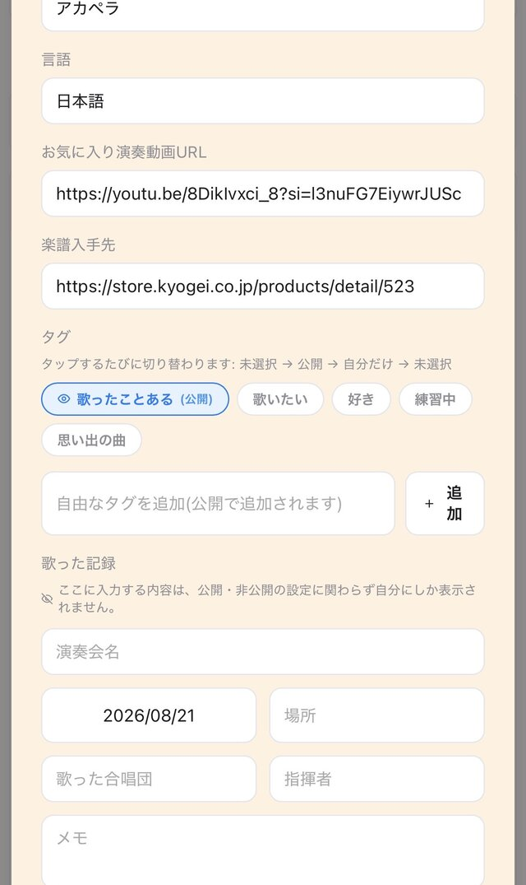

自分だけの合唱曲コレクションを、ずっと手元に。
「うたコレ」は、合唱で歌った曲・聴いた曲を記録し、整理するための無料のウェブアプリです。 学校やサークル、市民合唱団などで歌ってきた曲を、曲名だけでなく作詩者・作曲者・編成・伴奏・ 発表年・演奏動画・楽譜の入手先まで、まとめて記録できます。長年合唱を続けている方ほど、 「あの曲、なんていう曲だったっけ」「どの組曲に入っていたっけ」という経験があるはずです。 うたコレは、そうした記憶を自分の手で少しずつ積み上げていくためのツールです。
曲名・組曲名・作詩・作曲・編曲・発表年・編成・伴奏・言語・動画URL・楽譜入手先など、詳細な情報を1曲ごとに記録できます。
YouTube動画をその場でサムネイル付きで確認したり、楽譜の入手先URLをまとめて管理できます。
曲名・作詩・作曲・タグ(複数選択可)で絞り込み、組曲ごとにまとめて表示することもできます。
Googleアカウントでログインすると、登録した曲データが自分のGoogleドライブ内の非公開領域に自動的にバックアップされます。機種変更をしても引き継げます。
作成した曲リストを、QRコードやURLで友人・合唱団の仲間に共有できます。相手はアプリのインストールやアカウント登録なしで受け取れます。
すでに手元にある曲リストをCSVファイルから一括で取り込んだり、記録した内容をCSVで書き出してExcel等で管理することもできます。
実際にアプリを使っている画面のスクリーンショットです。






基本機能はすべて無料でご利用いただけます。 データの保存にはご自身のGoogleアカウント(Googleドライブの無料枠)を利用するため、 運営者側のサーバー費用に依存しない、持続可能な形での無料提供を目指しています。
本アプリは、生成AI(Claude by Anthropic)を活用して開発しています。 コードの実装やドキュメントの作成に生成AIを利用していますが、公開前の内容確認は運営者が行っています。
曲データは運営者のサーバーには保存されず、利用者の端末内および利用者ご本人のGoogleドライブの 非公開領域にのみ保存されます。詳しくはプライバシーポリシー、 ご利用条件は利用規約をご覧ください。
うたコレを使ってみる → ← アプリに戻る